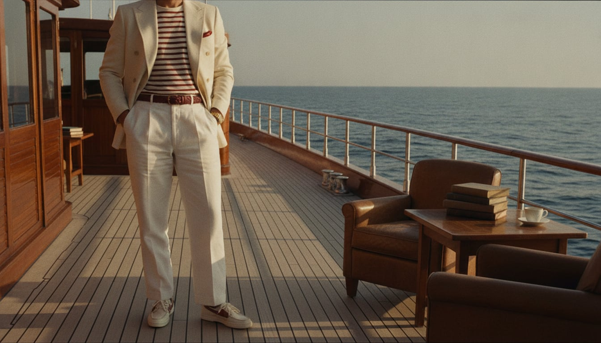
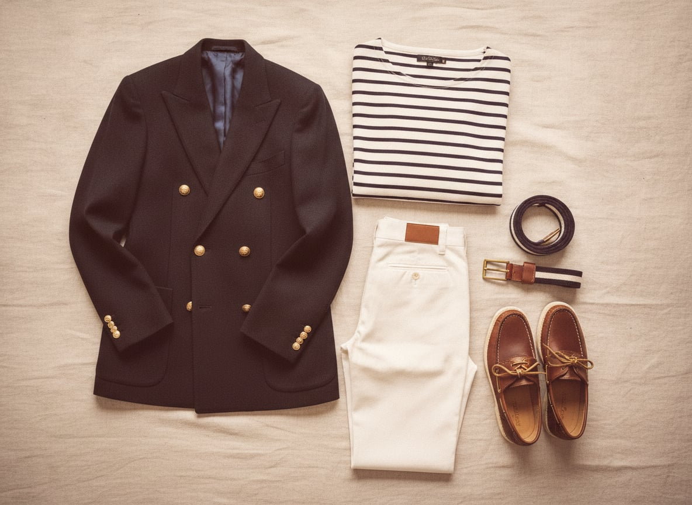

Nautical prep borrows its wardrobe directly from actual sailing — the double-breasted blazer with brass buttons descends from nineteenth-century British naval officer's dress, the Breton stripe from French Navy uniforms issued in Brittany in 1858 (regulation: twenty-one stripes, one for each of Napoleon's victories, or so the story goes) — and then spent the twentieth century drifting steadily away from any boat at all, adopted by yacht clubs, then East Coast prep schools, then anyone who liked the idea of a boat more than the reality of one.
The trademark features are all borrowed from deck life and kept regardless of whether there's a deck nearby: the Breton stripe, deck shoes with a non-marking sole and a lace that never quite gets tied properly, a brass-buttoned blazer worn with white trousers, a palette of navy, white, and red that reads as flag signal even indoors.
It suits people who enjoy a bit of theater in their formality — who like the idea that even a blazer can carry a story about the sea, whether or not you've personally been on one. There's an old-money cheerfulness to it, more playful than Savile Row and less worked-for than the Ivy League, borrowing gravitas from an ocean it mostly admires from the shore.
The double-breasted, brass-buttoned blazer descends directly from nineteenth-century British naval officer's dress, adopted by yacht clubs and later prep schools as a way of borrowing naval formality without any actual naval service required.
Genuine wool and real metal buttons at an accessible price.
Shop this →Heavier cloth and more historically accurate button and lapel detailing.
Shop this →Cut by a house with genuine naval tailoring history.
Shop this →French Navy regulation since 1858 specified exactly twenty-one stripes for the Brittany-issued sailor's shirt, one for each of Napoleon's victories according to popular legend — Coco Chanel borrowed the design for civilian wear in the 1910s and it never really left.
The stripe pattern at an accessible price, lighter cotton.
Shop this →The mill credited with originating the modern Breton shirt in 1889.
Shop this →Paul Sperry designed the original non-marking, siped rubber sole in 1935 after watching his dog's paws grip ice — the sole pattern he copied is still the reason deck shoes grip a wet boat deck, or a wet sidewalk, at all.
The actual original design and sole pattern, still in production.
Shop this →A slightly more refined leather and construction on the same core silhouette.
Shop this →American handsewn construction at the top of the boat-shoe-adjacent category.
Shop this →White trousers, worn well past any actual sailing season, borrow their formality from naval whites and cricket flannels alike — a color that only makes sense if you don't expect to do anything that would dirty it.
Heavier, better-draping cotton with a more considered cut.
Shop this →Cut and finished with the same care as a dress trouser, in fine cotton.
Shop this →A woven, often striped surcingle belt — originally a horse's saddle girth strap, adapted for menswear — carries the same borrowed-formality logic as the rest of this wardrobe: nautical or equestrian gear worn purely for its associations.
Genuine woven construction at an accessible price.
Shop this →The maker most associated with fine woven belts at a luxury level.
Shop this →The blazer stays on the hanger -- just the Breton stripe and white trousers, deck shoes, bare ankles, done.
A heavier reefer coat replaces the blazer, a wool version of the striped shirt, and the deck shoes give way (reluctantly) to a proper leather boot.
A yellow slicker, genuinely nautical and not remotely ashamed of it, over the usual layers -- this wardrobe owns real foul-weather gear and isn't afraid to use it.
Effectively a foreign concept; the heaviest coat in the closet gets pressed into service along with borrowed boots from someone more prepared for it.
For the yacht club's summer ball: a proper white dinner jacket, the one true concession this wardrobe makes to genuine formality.
Newport, Nantucket, and the coast of Maine — always somewhere a boat can actually go.
Patrick O'Brian's naval novels, sailing memoirs, and the yacht club newsletter read cover to cover.
Jimmy Buffett, sea shanties revived without irony, and whatever's playing at the club's Friday happy hour.
Navy and white everywhere, ship's models on the mantel, and a porch built specifically for watching the water.
Sailing, obviously, plus a standing tennis game and a genuine, competitive interest in the club's annual regatta.